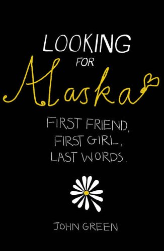

An interesting fact about me is that I never envisioned myself returning to a student role after five years as a professional, but here I am. traveling ignites my excitement. I love exploring new destinations and savoring the local cuisine and I am a passionate food enthusiast.
It tells the story of Miles Halter, a high school student who sets off on a journey to find a greater purpose in life, and ends up at a boarding school in Alabama where he meets Alaska Young, a mysterious and captivating girl. Through his friendship with Alaska, Miles learns about love, loss, and the beauty and pain of life. The novel has been praised for its insightful and poignant exploration of adolescence, as well as its witty and humorous narrative style. Overall, "Looking for Alaska" is a touching and thought-provoking read that will resonate with readers of all ages.
